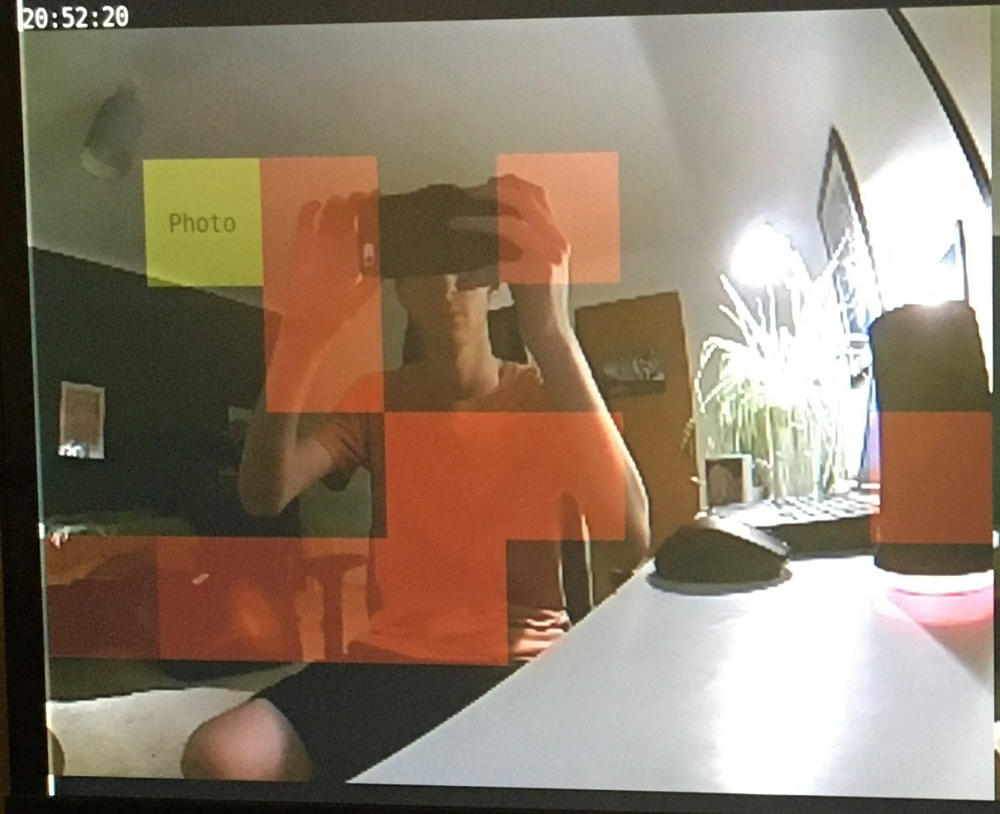
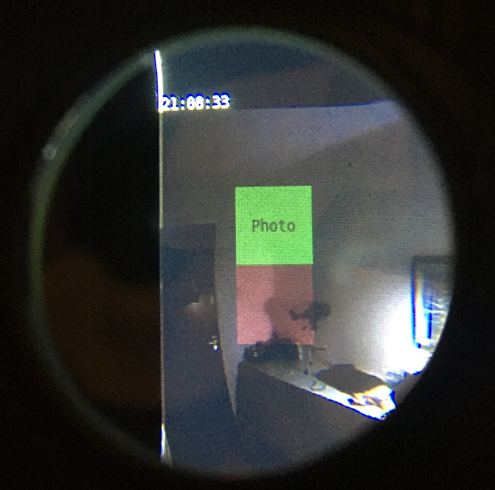

UI

(I have commited the great programmer sin of not bothering to screenshot a screen and instead taking a photo of it and cropping...)
Anyway, above you can see the UI. I decided to use turtle graphics to render the UI, partially because I was already familiar with it,
partially because I knew the PI could handle it. It proved much more efficient than rendering the UI onto the camera display, because the way
I did it the camera and UI operated in parallel.
To allow the UI to be seen through the left eye, I made the left display partially transparent.
Interesting point: because I only wanted the UI to be in the left eye
(and keep the right eye opaque, as the screenshots of the display needed to be opaque), the photo "button", needed to be on the left of the left eye display,
so my eyes would not ignore it in favour of the right eye display.
I left a lot of room at the top of the display, which I could have used for more than just displaying the camera, but I couldn't think of anything useful
to put there. For example, a map might've been neat, but I was only going to use the headset in my room...
It was the same with the buttons, I included a photo button as a POC, but the AR headset didn't really need any more functionality...
The photo button activates when a hand is detected over the button. However, it requires confirmation via another detection of a hand over the button before
it takes the photo, as sometimes the AI detects something over the button that it thinks is a hand but isn't. It's worth mentioning that a screenshot is taken
of the display every 2-3 seconds, and this is the input the AI uses to detect hands.
The red squares are places where the AI has detected the presence of a hand, the intensity of red represents it's certainty, but any certainties below 0.5
are ignored. (It works best in daylight with the headset on, but alright despite lack of these conditions.)
Perhaps I will improve the UI in the future with gyroscopic functionality... I'd like to, but we'll see...

Click the code below to download the python file:

<
Contents:
Click to jump to chapter: